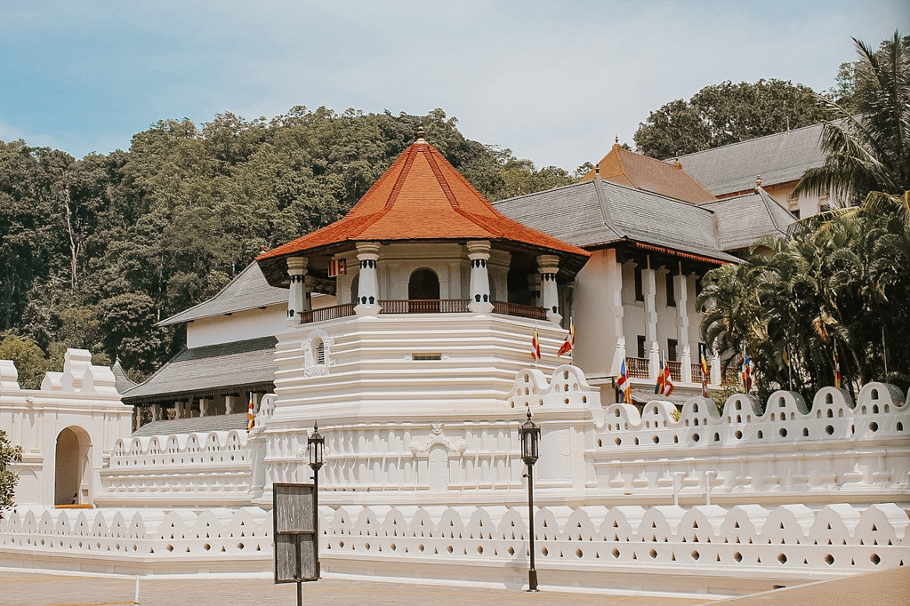
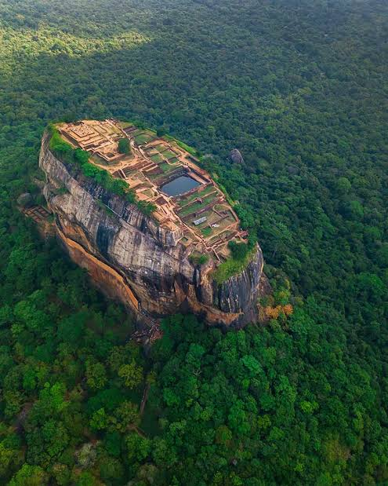
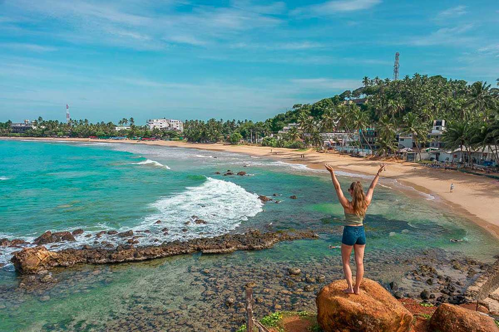

Kandy is one of the most beautiful cities in Sri Lanka. It is located in the central hills of the country. Kandy is famous for its beautiful scenery, rich culture, and historical importance. The Temple of the Sacred Tooth Relic is one of the most famous attractions in Kandy. It is a sacred place for Buddhists. Kandy Lake is another beautiful place in the city. Visitors can enjoy the peaceful environment and beautiful views around the lake. The Royal Botanical Gardens in Peradeniya is also a popular tourist attraction. Many tourists visit Kandy to experience its traditional culture, historical places, and natural beauty. The annual Esala Perahera is a famous cultural event that attracts many visitors. Kandy is truly a wonderful destination for anyone who wants to explore the beauty and culture of Sri Lanka.Kandy is also famous for its traditional arts, crafts, and delicious local food. Visitors can enjoy the beautiful mountain views and explore the nearby villages. The city has many hotels, shops, and restaurants for tourists. Kandy is a wonderful place to learn about Sri Lankan history and experience the country's rich cultural heritage. It is one of the most popular tourist destinations in Sri Lanka.Kandy is also a great place for nature lovers. The city is surrounded by green mountains, beautiful gardens, and peaceful landscapes. Visitors can enjoy boat rides on Kandy Lake and take photographs of the beautiful scenery. The nearby Udawattakele Forest Reserve is a popular place for walking and observing birds and other wildlife. Kandy is also well known for its traditional dance performances and cultural shows. These activities help visitors understand the traditions and customs of Sri Lanka. The friendly people and beautiful environment make Kandy a memorable destination for tourists from all over the world.
Kandy has a pleasant climate and beautiful natural surroundings. The city is especially attractive during the rainy season when the mountains and gardens become green and fresh. Tourists can enjoy shopping for traditional handicrafts, souvenirs, and local products. They can also taste delicious Sri Lankan food such as rice and curry, hoppers, and traditional sweets. With its rich history, cultural traditions, and natural beauty, Kandy offers a wonderful experience to every visitor.
Kandy is also famous for its beautiful lake, which is located in the heart of the city. Visitors can enjoy a peaceful walk around the lake and admire the surrounding hills.
The city is known for its traditional arts and cultural performances. Tourists can watch Kandyan dancing and buy handmade crafts and souvenirs from local shops.Kandy is a beautiful city in the central hills of Sri Lanka. It is famous for the Temple of the Sacred Tooth Relic, an important Buddhist place of worship. Many visitors also enjoy walking around Kandy Lake and exploring the nearby gardens and hills. The city is well known for its rich history, traditional Kandyan dancing, and cultural festivals. Tourists can visit local markets to buy handmade crafts, souvenirs, and traditional clothes. With its peaceful scenery and cultural attractions, Kandy is a popular destination for both local and foreign tourists.

Sigiriya is one of the most famous tourist attractions in Sri Lanka. It is located in the Matale District and is known for its historical and archaeological importance. Sigiriya is also called the Lion Rock because of its unique shape. The ancient rock fortress was built by King Kashyapa. Visitors can see beautiful frescoes, ancient gardens, and the remains of the royal palace at the top of the rock. The Mirror Wall is another interesting feature of Sigiriya. The surrounding area is filled with beautiful forests and natural scenery. Tourists can enjoy climbing the rock and taking photographs of the amazing views. Sigiriya is a UNESCO World Heritage Site and attracts visitors from all over the world. It is a wonderful place to learn about the history, culture, and architecture of ancient Sri Lanka.
Sigiriya is a popular destination for both local and foreign tourists. The area offers a peaceful environment and a pleasant climate. Visitors can explore the ancient water gardens, boulder gardens, and beautiful landscapes around the rock. The Pidurangala Rock nearby is another popular place for hiking and enjoying stunning views of Sigiriya. Tourists can also visit the Sigiriya Museum to learn more about the history of the ancient kingdom. The nearby villages offer opportunities to experience traditional Sri Lankan culture and local food. The natural beauty and historical importance of Sigiriya make it a memorable destination for everyone who visits Sri Lanka.Sigiriya is one of the most famous tourist attractions in Sri Lanka. It is an ancient rock fortress located in the Matale District. The site is known for its impressive rock, beautiful gardens, and historic ruins. Visitors can climb to the top of the rock and enjoy a wonderful view of the surrounding countryside. Sigiriya is also famous for its ancient wall paintings and the remains of a royal palace. It is a UNESCO World Heritage Site and an important part of Sri Lanka’s history and culture.Sigiriya is a popular tourist destination known for its ancient rock fortress and beautiful gardens. Visitors can climb the rock, see ancient paintings, and enjoy amazing views of the surrounding area.Sigiriya is famous for its ancient rock fortress, beautiful gardens, and amazing views. Visitors can climb the rock and see its historic paintings.

Mirissa is one of the most beautiful coastal destinations in Sri Lanka. It is located in the Southern Province and is famous for its golden sandy beaches and clear blue waters. Mirissa Beach is a popular place for swimming, surfing, and relaxing. Many tourists visit Mirissa to enjoy whale watching and dolphin watching. The beautiful coconut trees and peaceful surroundings make it an ideal place for nature lovers. Visitors can enjoy delicious seafood at the restaurants near the beach. Mirissa is also a wonderful place to watch beautiful sunsets and take photographs of the ocean.
Mirissa offers many exciting activities for both local and foreign tourists. Visitors can enjoy boat rides, snorkeling, and exploring the nearby beaches. Parrot Rock is a famous attraction that provides amazing views of the coastline. The nearby Coconut Tree Hill is another popular place for taking photographs and enjoying the sea breeze. Tourists can also experience the friendly hospitality of the local people and taste traditional Sri Lankan food. The relaxing atmosphere and natural beauty of Mirissa make it a memorable destination for everyone who visits Sri Lanka.
Mirissa is also famous for its vibrant marine life and beautiful coastal scenery. During the whale-watching season, tourists can observe blue whales and dolphins in the ocean. The beach is surrounded by small hotels, guesthouses, and restaurants that provide comfortable facilities for visitors. Many tourists enjoy walking along the beach in the evening and watching the sunset. The calm atmosphere and refreshing sea breeze make Mirissa a perfect place to relax and spend time with family and friends. Its beautiful beaches and exciting activities attract thousands of visitors every year. Mirissa is truly a wonderful destination for anyone who wants to experience the beauty of Sri Lanka's southern coast.Mirissa is a beautiful coastal town in southern Sri Lanka, famous for its golden beaches and clear blue sea. It is a popular destination for swimming, relaxing, and enjoying the sunset. Visitors can also go whale watching during the season and explore nearby attractions such as Coconut Tree Hill. The town has many small cafés and restaurants where tourists can enjoy fresh seafood and local food. With its peaceful atmosphere and beautiful scenery, Mirissa is a wonderful place for a relaxing holiday.Mirissa is a beautiful seaside town on the southern coast of Sri Lanka. It is well known for its golden sandy beaches, clear blue sea, and relaxing atmosphere. Many tourists visit Mirissa to swim, sunbathe, and enjoy the peaceful coastal scenery. The beach is also a popular place to watch the sunset, when the sky changes into beautiful colours. Visitors can find small cafés, restaurants, and shops near the beach, making it a pleasant place to spend a holiday. Mirissa is also famous for whale watching, especially during the suitable season. Tourists can take boat trips to see whales and dolphins in the ocean. The area offers activities such as surfing, snorkelling, and exploring nearby coastal attractions. Visitors can enjoy fresh seafood and traditional Sri Lankan food at local restaurants. With its natural beauty, friendly atmosphere, and exciting activities, Mirissa is one of the most attractive destinations for both local and foreign tourists.Mirissa is famous for its beautiful beaches, whale-watching trips, and relaxing atmosphere. Visitors can enjoy swimming, surfing, and fresh seafood while admiring the coastal scenery.Mirissa is a wonderful place to enjoy the sea, relax on the beach, and explore the beauty of Sri Lanka’s southern coast.
Yala is one of the most famous wildlife destinations in Sri Lanka. Yala National Park is located in the southeastern part of the country. It is well known for its rich biodiversity and beautiful natural environment. The park is home to many wild animals, including elephants, leopards, crocodiles, and deer. It is also a popular place for birdwatching. Many local and foreign tourists visit Yala to enjoy exciting wildlife safaris and observe animals in their natural habitats. The beautiful forests, grasslands, and lagoons make Yala a wonderful destination for nature lovers.
Yala National Park is especially famous for its leopard population. Visitors can explore the park through guided jeep safaris. These safaris provide an opportunity to see wild animals and enjoy the beauty of nature. The park also contains ancient religious sites and historical ruins. Sithulpawwa is one of the important historical places located within the park. Visitors can learn about the natural and cultural heritage of Sri Lanka while exploring Yala. The peaceful environment and amazing wildlife make it a memorable destination for tourists.
Yala is also an important place for wildlife conservation. The park protects many endangered animals and their natural habitats. Visitors are encouraged to follow park rules and respect the wildlife. The dry forests, beautiful beaches, and scenic landscapes make Yala a unique tourist attraction. Tourists can enjoy photography, birdwatching, and exciting outdoor experiences. Yala is truly a wonderful place to discover the natural beauty and wildlife of Sri Lanka.
Yala is a wonderful place for families and nature lovers. It offers a unique opportunity to experience the beauty of wildlife and the natural environment. A visit to Yala creates unforgettable memories for every tourist.Yala National Park is one of the most popular wildlife destinations in Sri Lanka. It is located in the southeastern part of the country and is famous for its rich biodiversity and beautiful natural scenery. The park is home to many wild animals, including elephants, leopards, deer, crocodiles, and various species of birds. Visitors can explore the park on a safari jeep and observe animals in their natural habitats. Yala is especially well known for its leopard population, making it an exciting place for wildlife lovers and photographers. The park also has forests, grasslands, lagoons, and sandy beaches, creating a variety of habitats for wildlife. With its unique animals and stunning landscapes, Yala National Park offers visitors a memorable experience and helps protect Sri Lanka’s valuable natural heritage.Yala National Park is one of the most famous wildlife parks in Sri Lanka. It is located in the southeastern part of the country and is well known for its rich biodiversity, beautiful landscapes, and exciting safari experiences. The park is home to many animals, including elephants, leopards, deer, crocodiles, wild boars, and monkeys. It also provides a habitat for a wide variety of birds, making it a popular destination for birdwatchers. Visitors can explore the park in a safari jeep and observe animals living freely in their natural environment. Yala is especially famous for its leopard population, and many tourists visit the park hoping to see these beautiful animals. The park contains forests, grasslands, lagoons, and coastal areas, creating different habitats for wildlife. Yala is not only a place for adventure but also an important area for protecting Sri Lanka’s natural heritage. Its amazing wildlife and peaceful surroundings make it a memorable destination for nature lovers and tourists.
Designed & Developed by M.D.G.T.DIAS